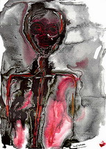
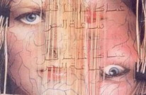

Ressources en Développement
Les psychologues humanistes branchés !
Inspiré par l'ambivalence de la victime
Je n'ose pas sortir la tête de mon coeur
car je sais qu'ils vont frapper plus fort
- (On dirait que la peine et la peur les attisent).

La main de ma maman est lourde et cinglanteles coups du grand loup de la ruelle s'agrippent dans mon ventre
comme des petits fruits pourris.
C'est pas ma faute, je dois rester plié
mais eux pensent que je fais courbette
et vlan, m'en flanquent une!
Moi je ne fais que protéger mon ventre... que baisser les yeux
pour qu'aucun jet du coeur ne gicle sur eux
-
parfois ce serait de l'acide pur
parfois le sel concentré de mes larmes que j'ai tordues
-
pour qu'ils ne piétinent pas dedans
oui, du sang bien rouge qui les marquerait à jamais
comme toutes les petites lames qu'ils ont insérées en moi.
Il n'y a personne pour me défendre.
Je voudrais seulement qu'elle m'aime...
Oh! pas autant que ma soeur
juste un peu
mais elle dit que je suis bête comme mon père
et faible...
Mon papa est mou
lorsque je hurle de douleur, il plonge le nez dans son verre
parfois une goutte d'eau glisse de son oeil
et roule au bord de son nez
il ne l'essuie pas...
Je n'espère plus.
Alors, comme le petit Prince, je m'invente des planètes, des roses, des éléphants...
et flotte autour du soleil
qui sera plus tendre pour moi quand je serai grand
quand je serai sorti de cette galère.

Je suis grand maintenantet j'erre encore d'une petite planète à l'autre.
Le miracle a échoué...
Je tente bien d'être parfait
mais ils attaquent quand même.
J'ai mal
alors je recule car je n'aime pas attiser
ils me pourchassent jusque dans les coins...
Que puis-je faire?
Jusqu'à ma femme qui m'assomme et m'abîme des pieds à la tête!
Je voudrais qu'elle m'aime un tout petit peu.
Combien de fois ne lui ai-je pas baisé les genoux pour cela?
Je me relève toujours le coeur saignant
je ne puis lui montrer ce coeur
elle sait trop comme le découper pour ensuite l'émietter.
-
Ils m'ont donné des cachets
qui endurcissent le coeur.
Mais que ferai-je d'un coeur dur et sec?
Je dois sortir la tête de mon coeur
et crier haut et fort à la cruauté et à l'injustice.
Je dois sortir les poings de mon coeur
et frapper là où la mesquinerie s'acharne.
Je dois me protéger
coeur et âme!
Juin 2004
| Voyez aussi Ravage et... Délivrance Recueil de poèmes humanistes (Préface de Jacques Salomé) par Michelle Larivey, psychologue-poète |
|
en discuter avec les autres lecteurs: La babillard électronique Infopsy ( Qu'est-ce que c'est ? ) |
|
| Tous droits réservés © 2004 par Michelle Larivey |
|